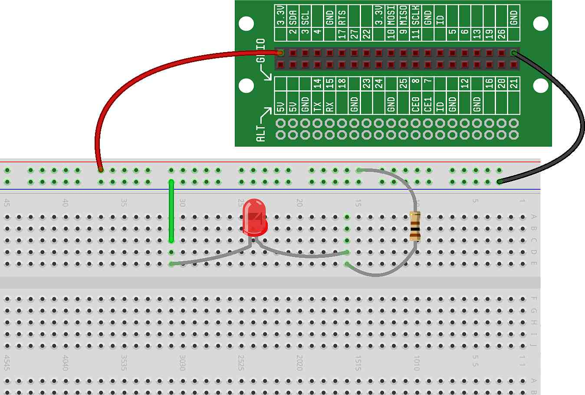
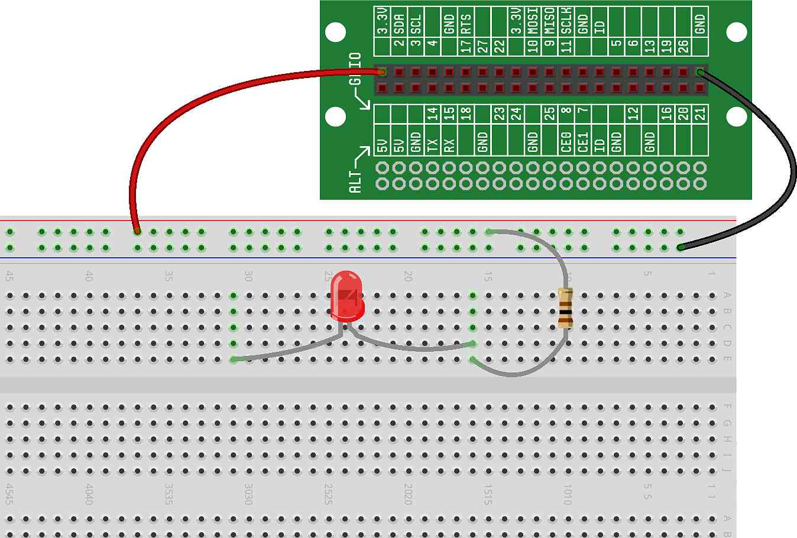
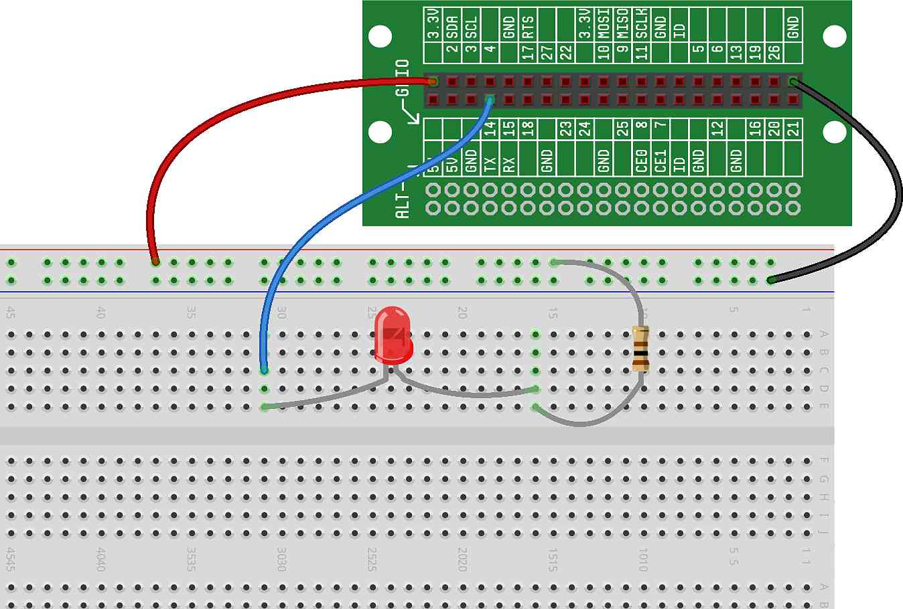

In this project, for the first time, we'll use GPIOs to control some hardware. Specifically, we'll wire an LED and then control the LED output using code that we'll write.
Before jumping into this project, we very strongly recommend that you read , as the concepts discussed there will be the basis for this project and nearly all future Ready Set STEM projects.
In a previous project, we created a circuit that allowed us to control an LED using a pushbutton — the LED was controlled solely using other hardware. But, the most fun and exciting part of the CREATOR Kit is using software to control the hardware to make it do interesting and useful things.
In this project, we'll rebuild a version of our original circuit (with just the power source, LED and resistor), but we'll the wire up the LED a little differently and then write some code to control it using the Raspberry Pi's GPIOs.
Before we start the new wiring for this project, let's wire up our original circuit from the project — this will give us some context so we can understand how we're going from that circuit (which uses strictly hardware to control the LED) to our new circuit (which uses a GPIO to control the LED). As a reminder, here is what that circuit looks like and how you'll want to wire your breadboard:
The LED should now be lit.
Now that we have some background on how GPIOs work and how we can control our LED with a GPIO, and now that we've wired up a circuit that we're familiar with, let's jump in and start using GPIOs...
The LED is currently connected to ground via the green wire. To disconnect it, remove the green wire: 
The circuit is no longer a closed loop and the LED should no longer be lit.
Now, connect a wire from the LED to a GPIO as shown in the diagram.
For this project, we will assume that you're using GPIO14 on the Lid Connector Board, though you're welcome to use any GPIO — just remember that you'll need to modify the code appropriately if you choose a GPIO other than 14 for this project.
This is what your breadboard should now look like:
You will probably notice that the LED is not lit at this point, even though we've hooked it up to the GPIO. The reason for this is that the GPIO, by default, outputs a "high" voltage (3.3 volts). As we discussed in the previous concept, if the GPIO voltage is high, there is no voltage difference across the LED, and as a result no electric current will flow — the LED will not light up.
The code we're about to write will set the GPIO voltage low (also known as ground, or 0V). When the GPIO is low, current can flow through the LED, because there is now a voltage difference across the LED.
These concepts can be a bit confusing at first, but as you use GPIOs more and more, the concepts and the conventions should become clearer.
Now that our circuit is complete, let's write the software.
The code to control the GPIO (and with it, the LED) is pretty short. It
uses a function called Output() to configure a GPIO as an
output.
Type (or copy-and-paste) the following code into your RDE's Code Window:
At this point, we don't expect you'll fully understand the code above. However, there are a couple important ideas to notice in the code:
On Line 2, we're configuring GPIO14 as an output. Every time we use a GPIO, we need to configure it as either an input or an output — it can't be both at once.
On Line 3, we're turning the LED on.
Other aspects of the code that you might not understand will become more clear as we progress through the tutorials. For now, understanding the basic concepts above should be enough to get you started.
Run the code the same way you did in the project – press the Play icon above the code window. Assuming you did everything correctly, the LED should now be lit.
Congratulations! You just controlled some hardware you built using software you wrote.
The circuit shown uses GPIO14 to control the LED. Can you modify the circuit and the code to use a different GPIO?
The my_led.on() command turns the LED on by modifying the
GPIO voltage. Can you guess how to change this command to turn the LED
off?